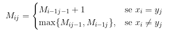

Dadas as sequências X = {x₁, x₂, x₃...}, Y = {y₁, y₂, y₃...} no mesmo alfabeto, desejamos encontrar a maior subsequência comum a X e Y, denotada por Z.
Os elementos não precisam estar consecutivos, mas é importante que tenham a mesma ordem.
A ideia deste algoritmo utiliza programação dinâmica.
Considere os prefixos xᵢ = x₁x₂x₃...xᵢ yⱼ = y₁y₂y₃...yⱼ
x₀ = ε
x₁ = x₁
x₂ = x₁x₂
Considere Mᵢⱼ = Tamanho da maior subsequência comum entre xᵢ e yⱼ.
M₀ⱼ = 0
Mᵢ₀ = 0
M₁₁ = {1, se x₁ = y₁ | 0, se x₁ ≠ y₁}
Queremos determinar Mₘₙ, para encontrá-lo, construimos a tabela da seguinte forma:

Para recuperar o Z, podemos adicionar às linhas:
5. Bᵢⱼ ← "↖" 7. Bᵢⱼ ← "↑" 8. Bᵢⱼ ← "←"